3SK3 Project 2
George Zhang 1416074
For project two, we extend project one to include the use of variance and gradient as means to validate whether a template is contained in a reference image. We use the same algorithms to build the original summed value table and three new summed value tables (L2, LX, LY) for computing variance and gradient efficiently.
Contents
Part 1: Initialization
We will use int64 for the summed value tables and double (float64) for our subsequent calculations.
clear ; close all; clc disp('Initializting...') image_file = 'mcmaster_reference.png'; search_file = 'mcmaster_template.png'; % image_file = 'sample.png'; % search_file = 'search.png'; image = imread(image_file); image = rgb2gray(image); highlighted_image = image; search = imread(search_file); search = rgb2gray(search); % Search image diemsions m_s = size(search, 1); n_s = size(search, 2); search_pixels = double(m_s*n_s); % Bigger image dimensions x = size(image, 1); y = size(image, 2); % We only deal with Jx = Jy Jx = m_s; Jy = n_s; % Sum tables: L1 = int64(zeros(x,y)); L2 = int64(zeros(x,y)); LX = int64(zeros(x,y)); LY = int64(zeros(x,y)); disp('Done Initializing.')
Part 2: Generating sum tables
The idea behind generating the summed value tables is the same as project 1; we use a reccurence relation
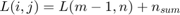
to calculate them efficiently through the use of previously calculated values in the table. The tables (L1, L2, LX, LY) have been named in accordance to the project requirements file on avenue to learn.
disp('Generating sum table...') % Generate sum table for i = 1:x n_sum_L1 = int64(0); n_sum_L2 = int64(0); n_sum_LX = int64(0); n_sum_LY = int64(0); for j = 1:y n_sum_L1 = n_sum_L1 + int64(image(i,j)); n_sum_L2 = n_sum_L2 + int64(image(i,j))^2; n_sum_LX = n_sum_LX + i*int64(image(i,j)); n_sum_LY = n_sum_LY + j*int64(image(i,j)); if i ~= 1 L1(i,j) = L1(i-1,j) + n_sum_L1; L2(i,j) = L2(i-1,j) + n_sum_L2; LX(i,j) = LX(i-1,j) + n_sum_LX; LY(i,j) = LY(i-1,j) + n_sum_LY; else L1(i,j) = n_sum_L1; L2(i,j) = n_sum_L2; LX(i,j) = n_sum_LX; LY(i,j) = n_sum_LY; end end end disp('Done enerating sum table.')
Part 3: Searching image for template
In order to calculate variance and gradient from our sum tables, we must first derive a formula which has the variables in a proper form. Let us first consider variance. The variance of a random variable 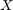 with mean 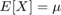 is defined as:
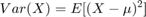
We don't have any way of calculating variance in this form. However, using properties of expectations, we can manipulate this formula as follows:
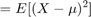
![$$ = E[(X^2-XE[X] + E[X]^{2})] $$](project2_eq14011145703218078842.png)
From linearity,
![$$ = E[X^2] - 2E[XE[X]] + E[E[X]^{2}] $$](project2_eq02849030331240142261.png)
The expected value of an expectation is unchanged. In addition, we apply the outer expectation to the 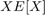 term:
![$$ = E[X^2] - 2E[X]E[X] + E[X]^{2} $$](project2_eq08216495767825701396.png)
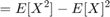
Variance in this form can be calculated using the SVTs L1 and L2.
To calculate the gradients, suppose we had a JxJ template image. Then our LX table can generate for us an EP operator for a position 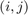 which is offset by however far in 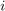 we are in the image. So it is necessary to perform patch_grad_x = (LX_sum - (i-(Jx-1)/2) * L1_sum) (note the 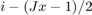) to achieve the correct offset so the center of the EPx begins at in the center zero and extends to 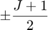 on either end.
patch_mean = double(zeros(x,y)); search_mean = mean2(search); patch_var = double(zeros(x,y)); search_var = var(single(search(:)), 1); count_project_1 = 0; count_project_2 = 0; % patch_grad_x = double(zeros(x,y)); % patch_grad_y = double(zeros(x,y)); patch_grad_mag = double(zeros(x,y)); patch_grad_dir = double(zeros(x,y)); search_grad_x = double(0); search_grad_y = double(0); % Template gradient using naive method for i=1:Jx for j=1:Jy search_grad_x = search_grad_x + (i - (Jx+1)/2)*double(search(i, j)); search_grad_y = search_grad_y + (j - (Jy+1)/2)*double(search(i, j)); end end search_grad_mag = sqrt(search_grad_x^2 + search_grad_y^2); search_grad_dir = atan2(search_grad_y, search_grad_x); % Search for the template inside larger image disp('Performing image search...') for i = m_s:x for j = n_s:y % If not searching edge of image if i > m_s && j > n_s L1_sum = double(L1(i, j) - L1(i - m_s, j) - L1(i, j - n_s) + L1(i - m_s, j - n_s)); L2_sum = double(L2(i, j) - L2(i - m_s, j) - L2(i, j - n_s) + L2(i - m_s, j - n_s)); LX_sum = double(LX(i, j) - LX(i - m_s, j) - LX(i, j - n_s) + LX(i - m_s, j - n_s)); LY_sum = double(LY(i, j) - LY(i - m_s, j) - LY(i, j - n_s) + LY(i - m_s, j - n_s)); % Searching along edges elseif i > m_s && j == n_s L1_sum = double(L1(i, j) - L1(i - m_s, j)); L2_sum = double(L2(i, j) - L2(i - m_s, j)); LX_sum = double(LX(i, j) - LX(i - m_s, j)); LY_sum = double(LY(i, j) - LY(i - m_s, j)); % Searching along edges elseif j > n_s && i == m_s L1_sum = double(L1(i, j) - L1(i, j - n_s)); L2_sum = double(L2(i, j) - L2(i, j - n_s)); LX_sum = double(LX(i, j) - LX(i, j - n_s)); LY_sum = double(LY(i, j) - LY(i, j - n_s)); % Searching along edges else L1_sum = double(L1(i, j)); L2_sum = double(L2(i, j)); LX_sum = double(LX(i, j)); LY_sum = double(LY(i, j)); end patch_mean(i,j) = L1_sum/search_pixels; patch_var(i,j) = L2_sum/search_pixels - patch_mean(i,j)^2; % Optional: Normalized patch gradients (not used) % patch_grad_x = (LX_sum - (Jx+1)/2 * L1_sum) / (L1_sum + i*j*(Jx+1)/2); % patch_grad_y = (LY_sum - (Jy+1)/2 * L1_sum) / (L1_sum + i*j*(Jy+1)/2); % Adjust the LX sum table's result by a factor using the L1 sum % table to account for the fact that we want to convolve a matrix % of the form % -(J+1)/2, -(J+1)/2 + 1, ... , 0, ... , (J+1)/2 - 1,(J+1)/2 % rather than how LX sum stores the values at row i, % -(J+1)/2 + i, -(J+1)/2 + 1 + i, ... , i, ... , (J+1)/2 - 1 + % i,(J+1)/2 + i patch_grad_x = (LX_sum - (i-(Jx-1)/2) * L1_sum); patch_grad_y = (LY_sum - (j-(Jy-1)/2) * L1_sum); patch_grad_mag(i,j) = sqrt(patch_grad_x^2 + patch_grad_y^2); patch_grad_dir(i,j) = atan2(patch_grad_y, patch_grad_x); % If the mean, variance, gradient magnitude and gradient direction % of the patch and template are similar, detect a match if abs(search_mean - patch_mean(i,j)) < 0.001 count_project_1 = count_project_1 + 1; end if abs(search_mean - patch_mean(i,j)) < 0.001 && abs((search_var - patch_var(i,j))/search_var) < 0.005 ... && abs((search_grad_dir - patch_grad_dir(i,j))/search_grad_dir) < 0.005 ... && abs((search_grad_mag - patch_grad_mag(i,j))/search_grad_mag) < 0.005 % mean = abs(search_mean - patch_mean(i,j)) % search_var; % patch_var(i,j); % variance = abs(search_var - patch_var(i,j)); disp('Image found at (x,y):') disp(j-n_s) disp(i-m_s) count_project_2 = count_project_2 + 1; end end end disp('Done performing image search.')
Part 4: Extra results from code:
% How many times the image was found disp('How many times the image was found using old algorithm:') count_project_1 disp('How many times the image was found using new algorithm:') count_project_2 % imshow(highlighted_image);
Part 5: Complexity analysis
Generating the sum tables:
For an 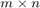 image, the algorithm must loop through each pixel to compute the value of the sum table at . It keeps a running sum (using previous values in the table) so regions do not need to be resummed. Thus the algorithm for the sum table generation runs in 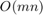. Note that all four sum tables are generated in the same way, so there is no need for special consideration.
For searching the reference for the template, suppose the template was 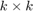 pixels. Then we must consider every patch in the reference image - however, with the SVT, we can get the desired statistical value of the patch in constant time 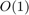 independent of k. So if we want to do this for every patch in an image and assume 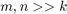, then the algorithm runs in .
Advantages of this algorithm:
- Better runtime than naive approach if we want to search a large image for a template, or check an image against multiple templates.
- More statistical features means better identification of templates (i.e., fewer false positives).
Disadvantages:
- Slower and more complicated than a naive approach if we only have a small image or want to check a small region of a larger image for a template.
- Variance calculation using 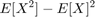 is numerically unstable. Note that we are limited to calculating variance in this way because we are using the sum table approach. https://en.wikipedia.org/wiki/Variance#Definition <- (Source for instability of variance calculation)
- Extra memory used by sum tables
Part 6: Question
The size limitation of signed uint32 extends from 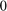 to 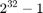. Thus our sum tables LX and LY must not exceed .
We are given a reference image of 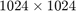 pixels; suppose our template was pixels. Let us initially construct an upper bound by contriving a worse-case scenario.
First, from the tutorial note 3SK3-proj2.pdf, there is a proof showing that for the table L1, it is always possible to find the correct statistical values relying on L1 even if there is integer overflow. However, this proof relies on the property

which will only hold if 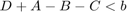. For L1, this is a reasonable assumption; for the worst-case scenario, a patch of pixels with value 255, we would have to have 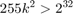 or 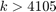 to violate the condition. Most modern displays are less than 3840 pixels wide on the long edge.
For LX/Y, we use the same formula assumption and try to determine a new upper bound for k. Our worst-case scenario would be when we have a patch of pixels with value 255 in the bottom right corner of LX/Y, so that 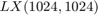 is maximized. Our image matrix would look something like

For which the sum of the patch is
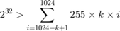
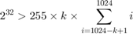
Using some sum identities this can be conveniently rewritten as
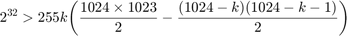
which has the solution

Thus, our template has a limit of 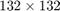 pixels.